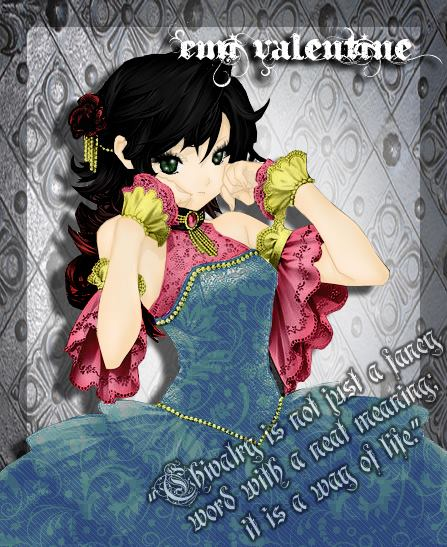

eat. breathe. design
an interactive evolution of her design work.
2012 • the beginning
using picmonkey and gimp, Jessica began her journey into the depths of graphic design. if you can even consider this kind of thing "design". Juliana Valentine was a character of her creation, the 6-year old sister to Vice Valentine. she was used for various roleplaying activities with friends. using an anime picture as a base, she began her journey into graphic design by changing the colors, backgrounds, and such to create a piece of her own.
2012 • adobe photoshop cs5
once she got her hands on a portable pirated version of photoshop (she purchases a subscription now!!!!), there was no stopping her. she used it almost daily, putting hours in at a time to learn the program to better suit her desires. slowly, she began to learn the tools and methods that are associated with graphic design. although, most of us can admit this edit is a little rough around the edges.

2013 • new year, new me
2013 began, and with that, Emi Valentine was no more. Maeve Remembrance became the focus point of all of her designs with her brown and blonde ombre and bright green eyes. although the quality of the editing style finally began to improve, by the typography alone you can tell she still had much learning to do on the topics of design and aesthetics.
2013 • jessica marie
finally, something decent to look at. you can tell by looking at this one the gears finally began rolling, processing just how much one really can learn in just one year. however, the design is clearly a little too bold -- too many colors, patterns, shadows, stroke, you name it, this picture has it. even an overlay of lines!!!! still too much going on here, but hey, she’s getting the idea of design (finally).
2013 • new month, new me?
in just a few months, she already grew tired of the old Maeve and brought in the new style of her character: blue hair, a purple leopard print, zebra print on her arms, and sparkles in her hair the editing style is also clearly different -- a little less going on in the background, fewer colors, a sharper image. the process is constantly moving forward, from day to day and design to design.
2014 • f r i e n d s
as time progresses, a clear pattern exists throughout the past two years of design. improvement, for one. although there is a bit too much going on with the colored background and colored text, there is finally a clear hierarchy, colors that compliment one another, and a decent set of font pairing. all in all, not a bad edit -- but still far away from true graphic design.
2014 • baby’s first real design
finally, something unique and original (only took two years…)! let’s pull apart this design from the ground up -- too many effects on the text, too busy of a design, too many stars and poor drawing quality.. it’s a step in the right direction, but not quite up to the standards of a real designer.
2014 • does she ever stop editing
the answer to this question is no, she does not and continues to edit anime photos into the present day. it is personally hard to critique this work as it is one of my all time favorites, but girl what was you thinking? again, far too many colors, too many effects, too many patterns. design can be simple, trust me, it does not have to be as extra as this.
2015 • genuine progress
look familiar? this is how her brand started -- Lacey Marie Greene. this is one of the better edits, with the picture having been completely redrawn in photoshop. the only thing i can truly critique is the drop shadow on the background and character, as it seems to be progressing into a very busy area. otherwise, this piece isn’t so bad. it takes time to make greatness.
2016 • years come and go, and i will always change
surprise surprise, yet another new look for Maeve. another busy look, another busy background. however, and i may be biased, i love the pastel color palette and gradients (yikes… a designer who likes gradients). the few accents of black in her piece really draw your eye around the page. don’t worry, it does get better finally.
2017 • simple, but beautiful
jessica truly has shown potential through the years, and finally, she begins to shine. a simple card layout can go a long way. colors go well together, there are no harsh black tones, the font is fitting for the occasion. i could go on about how much better this project is compared to her work from years prior.
2018 • last edit, i swear
she’s back and better than ever. truthfully, not a bad edit in the world of anime photo editors. the font choices go well together, there are fewer effects than previously, a less busy layout (she still needs some work). in this, there is a designer. in this, the old and new passions are finally blossoming into one (very big) work of art.

2018 • blossoming designer
scala -- the best typeface in the history of typefaces (i’m not bias i swear). this typebook combines design, typography, research, and history into one. the mood this design creates is something light, a vibrant and happy atmosphere. the only critique i can provide on her design is that some of the shades of yellow are a bit too vibrant and harsh on the eyes. she is learning and growing every day, and it shows through the years.
2019 • present day pictures
going throughout the years, a spark can be seen in her. though not all work has been perfect design work, the effort and creativity shows through her progress. as of today, she works on projects for real clients instead of just herself. ask her to make a logo, she will. code a website? she’s there. there is always room for improvement, but in the present day, the designer inside is truly present.